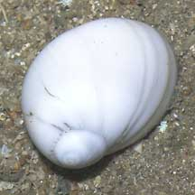
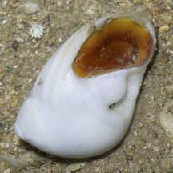
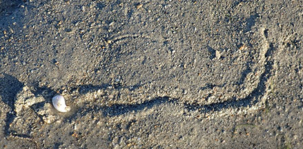
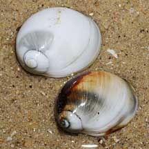

|
|
| shelled snails text index | photo index |
| Phylum Mollusca > Class Gastropoda > Family Naticidae |
| Oval
moon snail Polinices mammilla Family Naticidae updated Aug 2020 Where seen? This oval white moon snail is among our most commonly encountered. Usually seen in numbers on many our Southern sandy shores. Elsewhere, it is abundant on sandy bottoms associated with coral reefs. Features: 5-6cm. Shell smooth glossy, thick heavy, oval, the spiral tip smoothly sticking out so the overall shape resembles a teardrop or breast (Mamma means 'breast' in Latin). Shell pattern plain white, sometimes with large irregular patches of brown, black, orange or yellow. On the underside, a large bump and shallow depression next to the bump. Operculum smooth, made of a thin horn-like material, amber yellow sometimes with dark blotches. Body plain white. It's hard to get a good look at the entire body as the snail retracts quickly and completely into the shell when it is disturbed. Sometimes mistaken for the Ball moon snail that is easily distinguished by its spherical shell which has a brown-coloured blotch on the underside. |
 Kusu Island, May 06 |
 Kusu Island, May 06 |
 Typical trail created when it burrows just beneath the surface. Terumbu Pempang Laut, Jul 20 |
 Tanah Merah, Aug 09 |
| Human uses: Elsewhere, it is collected in large quantities for food and the shell trade. In Thailand, it is actively collected at low tide by hand and sold by weight for shell craft, in batches of 5,000-10,000 shells. |
|
 Sentosa, Jun 09 |
 Sentosa, Jun 09 |
| Oval moon snails on Singapore shores |
On wildsingapore
flickr
|
| Other sightings on Singapore shores |
Links
|